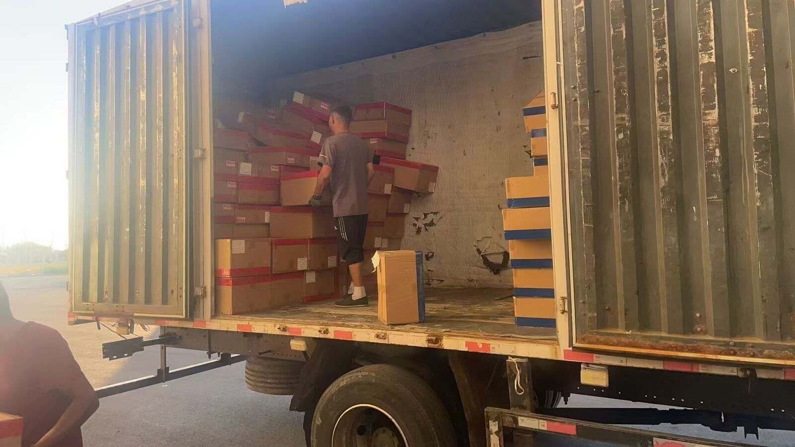

بار حجیم
مبلمان تختبسته به ایران: سقف ۹۶ متر مکعب قبل از وزن پر میشود
مبلمان تختبسته، پارچه و منسوجات خانگی، تشک و کالای فومی یک ویژگی مشترک دارند: وزن کم، حجم زیاد. برای همین وقتی این بار از چین به گمرک ایران میرود، پرسش درست «چند تن است؟» نیست؛ «چند متر مکعب است و چند کامیون لازم دارد؟» است. این صفحه همان محاسبه را روی تریلر چادری تیر توضیح میدهد.
- سقف هر کامیون: ۹۶ متر مکعب و ۲۵ تن، هرکدام اول برسد
- بار سبک و حجیم اول سقف حجم را پر میکند، نه وزن را
- کنسول از ۱ متر مکعب یا ۱۰۰ کیلوگرم شروع میشود
- مقصد: گمرک مشهد یا غرب تهران؛ انبار به گمرک، CPT / DAP
چرا روی این خط اول متر مکعب تمام میشود
کامیون این کریدور تریلر چادری است، نه کانتینر. فضای بار یک حجم بسته و مشخص است و دو سقف روی آن نشسته: ۹۶ متر مکعب و ۲۵ تن. هرچه زودتر برسد، همان مرز کار است. برای بار سنگین مثل مصالح یا ماشینآلات، وزن زودتر میرسد. برای مبلمان تختبسته و منسوجات، حجم زودتر تمام میشود و جای وزن باقی میماند.
نتیجهٔ عملی ساده است: تعداد کامیون را با متر مکعب حساب کنید. اگر بستهبندی تخت را با ابعاد واقعی کارتن بشمارید، خیلی از محمولههای «۲۰ تنی» در واقع دو کامیون حجم میخواهند و یک کامیون وزن. همان عدد ۹۶ برای کامیون مستقیم و کامیون با تعویض بار یکسان است؛ ما یک سقف منتشر میکنیم، نه دو تا.
بستهبندی تخت چه چیزی را عوض میکند
بستهبندی تخت حجم را کم میکند، اما ضربهگیر را هم کم میکند. لبه و گوشهٔ پنل و درب کابینت، اولین جایی است که در بارگیری و در تعویض بار آسیب میبیند. سه کار ساده این ریسک را پایین میآورد: گوشهگیر فومی یا مقوایی، کارتن دولایه برای صفحههای بزرگ، و یکسانسازی ابعاد کارتن تا چیدمان بدون فاصلهٔ مرده انجام شود.
حجمی که اعلام میکنید باید از ابعاد بیرونی کارتن دربیاید، نه از ابعاد محصول. تفاوت این دو روی یک محمولهٔ بزرگ، چند متر مکعب است و همان چند متر مکعب، تفاوت یک کامیون و دو کامیون.
بارگیری: ایستاده یا خوابیده
بستههای تخت را میتوان ایستاده چید، به شرطی که به دیواره یا نقاط مهار بسته شوند. تریلر چادری دیوارهٔ سخت کانتینر ندارد؛ پس مهار با تسمه و پلمب بار، بخشی از کار است، نه کار اضافه. هزینهٔ مهار و لاشینگ در کرایهٔ ما نیست و جدا حساب میشود؛ اگر خودتان مهار میکنید، طرح مهار را پیش از بارگیری با ما هماهنگ کنید.
در بار مختلط، سنگین پایین و سبک بالا میرود، و هر واحد بار باید مستقل مهار شود. برای بارهای حجیم که تا سقف چادر بالا میآیند، فاصلهٔ ایمن تا چادر را نگه دارید؛ چادر کشش دارد و بار نباید به آن تکیه کند.
رطوبت: چادر کانتینر نیست
تریلر چادری کاملاً بسته و بیتهویه مثل کانتینر فلزی نیست و در مسیر چهار کشور، دما و رطوبت عوض میشود. برای امدیاف، تخته و پارچه این یعنی ریسک ورقشدگی و بوی ماندگی. توصیهٔ عملی: لایهٔ ضدآب داخلی، پالت یا کفی چوبی که بار با زمین تماس نداشته باشد، و کیسهٔ جاذب رطوبت برای بارهای حساس. اینها توصیهٔ بستهبندی است، نه تعهد به نتیجه.
کنسول یا کامیون کامل
بار مبلمان اغلب بین ۵ تا ۳۰ متر مکعب است و کامیون کامل نمیخواهد. کنسول از ۱ متر مکعب یا ۱۰۰ کیلوگرم شروع میشود. در کنسول، ترتیب بارگیری و تخلیه اهمیت دارد: باری که زودتر ترخیص میشود باید در دسترس باشد و بار حجیم نباید راه بقیه را ببندد. اگر حجم شما به ۹۶ متر مکعب نزدیک میشود، کامیون کامل ارزانتر و سادهتر از کنسول است.
از کدام مرز و به کدام گمرک
دو مسیر فعال داریم: خط ووچیا از سینکیانگ به قرقیزستان، ازبکستان و ترکمنستان و از سرخس وارد ایران میشود؛ خط خورگوس از قزاقستان شروع میشود و بعد همان مسیر ازبکستان و ترکمنستان را طی میکند. مالیات ترانزیت ۰٫۴٪ فقط روی خط ووچیاست: مالیات است نه کرایه، در کرایهٔ ما نیست و خط خورگوس آن را ندارد.
زمان حمل خط ووچیا از مرز ووچیا شمرده میشود، نه از انبار چین، و ترخیص ایران در آن نیست. در حال حاضر کامیون مستقیم ۲۱ تا ۲۳ روز تا گمرک تهران و ۱۸ تا ۲۱ روز تا گمرک مشهد؛ کامیون با تعویض بار ۲۶ تا ۳۰ و ۲۴ تا ۲۸ روز. زمان خط خورگوس روی صفحه نمیآید و در استعلام کتبی داده میشود. مسیر انبار چین تا مرز ووچیا معمولاً حدود ۷ روز است و جدا حساب میشود. این اعداد بازهٔ جاریاند، نه تعهد.
مقصد قابل فروش گمرک مشهد یا گمرک غرب تهران است؛ در تهران: گمرک غرب، شهریار یا بندر خشک آپرین. سرخس ورودی ایران است و مقصد قابل فروش نیست. تحویل انبار به گمرک است با CPT / DAP؛ درببهدرب و DDP نداریم و ترخیص ایران با حقالعملکار خریدار است.

برای استعلام چه بفرستید
شش چیز: انبار مبدأ (ایوو، شنژن پینگهو، گوانگژو باییون، شانگهای یا محوطهٔ مرز)، گمرک مقصد، نام کالا با کد تعرفه، وزن ناخالص به کیلوگرم، حجم به متر مکعب، و تعداد بسته با ابعاد کارتن. با این شش مورد نرخ کتبی با تاریخ اعتبار صادر میشود. کرایه در صفحه نیست.
یک نکتهٔ مرزی: مبلمان و کالای خانگی که لوگو یا نام برند روی کارتن و محصول دارد، بار برند است و اول باید مدارکش بررسی شود. بررسی مدرک به معنی پذیرش حمل نیست.
پرسشهای متداول
یک کامیون چقدر مبلمان تختبسته میبرد؟
سقف هر کامیون ۹۶ متر مکعب و ۲۵ تن است. بار سبک و حجیم معمولاً اول سقف حجم را پر میکند، نه وزن را.
۱۵ متر مکعب مبلمان را میشود کنسول کرد؟
بله. کنسول از ۱ متر مکعب یا ۱۰۰ کیلوگرم شروع میشود؛ لازم نیست کامیون کامل بگیرید.
تحویل به گمرک مشهد میشود یا غرب تهران؟
هر دو مقصد قابل فروش است. سرخس ورودی ایران است، نه مقصد قابل فروش؛ مقصد را در استعلام دقیق بنویسید.
ترخیص و تحویل درب هم انجام میدهید؟
خیر. تحویل انبار به گمرک است، CPT / DAP؛ ترخیص ایران با حقالعملکار خریدار است و درببهدرب و DDP نیست.
مرتبط: کنسول به گمرک تهران · دربست یا کنسول · گمرک مشهد یا غرب تهران